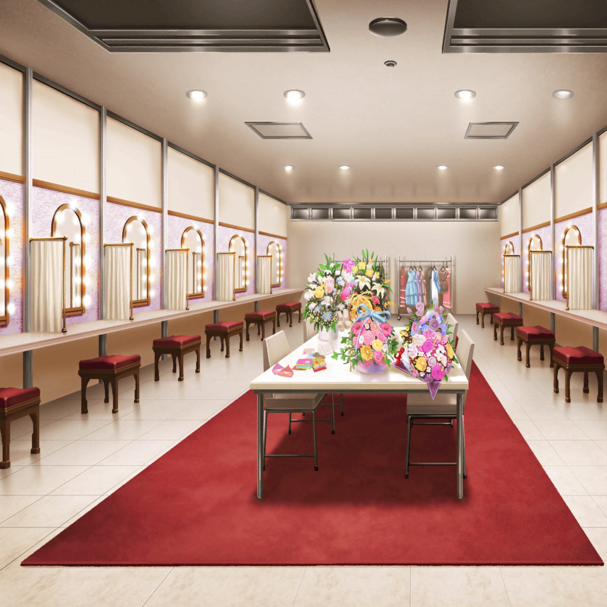
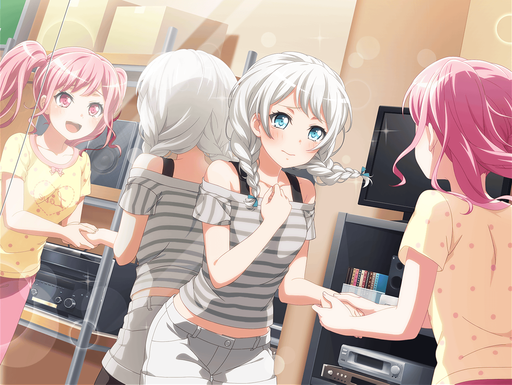

アイドル事務所
彩
活動休止かあ……
彩
（バンド結成した直後に、活動休止になっちゃった時は
みんなで一緒に練習を続けられてたけど……）
彩
（今は、それすらできない……）
彩
どうしたらいいんだろう……

レッスンスタジオ
イヴ
アヤさん！ おはようございます！
彩
イヴちゃん！ 来てたんだね。
……って、手に持ってるのはモップ？
イヴ
はいっ！ トックンの前に、掃除をしていました
イヴ
このスタジオにいつでもみなさんが来て、すぐに
練習ができるように……と思いまして
彩
イヴちゃん……
イヴ
掃除してみて思ったんですけど、このスタジオって
とっても広いんですね
イヴ
モップがけしただけで、すっごく汗をかいてしまいました
イヴ
もっともっと狭い場所だと思っていたのに……
なんだか、不思議です
彩
そうだね。二人だと、広く感じちゃうね
イヴ
……きっと、また五人揃ったら狭いなって思えますよね？
彩
……
イヴ
アヤさん、なにか言ってください！ なにか……
彩
パスパレがなくなっちゃたらさ、どうなるのかな……
イヴ
え……？
彩
スタッフさんの言葉を聞いてから、ずっと考えてる。
パスパレがなくなったらどうなるのかなって。
けど、想像つかないや
イヴ
……なくなりません！
イヴ
パスパレは、なくなったりしないです！！
彩
イヴちゃん……
イヴ
どうしてなくなった時のことを考えるんですか？
アヤさん、パスパレがなくなってほしいのですか？
彩
そ、そんなこと思ってないよ！ 思うわけないじゃん！
彩
私だってパスパレ、これからもずっと続けたいよ……
でも、どうしたら続けられるのか考えても考えても、
わかんなくて……っ
イヴ
だったら、一緒にそれを伝えましょう！
なくならないように、がんばりましょう！！
イヴ
思っているだけでは、伝わりません。
ちゃんと伝えなくちゃ……それがブシドーですっ
彩
ブシドーって……
イヴ
ファンの方達がケンカをしてしまった時も
きちんと私達の気持ちをお話したら、
ファンの方達に伝わりました！
イヴ
そ、それから……そうです！ アユミさん！
アヤさん、アユミさんの言葉を思い出してくださいっ！！
彩
あゆみさんの……？
あっ……！

あゆみ
大丈夫。彩ちゃんならきっと、私を超える
アイドルになれるって信じてるよ。だって……
あゆみ
彩ちゃんは何があっても絶対にめげない、諦めない……
彩
どんな時だっていつも笑顔っ！
私、あゆみさんを越えるそんなアイドルになってみせますっ！！
イヴ
めげたり、諦めたりしない……
一生懸命なアヤさんでいてくださいっ！！
イヴ
自分を貫き通して、キラキラする素敵なアヤさんで
いてください……っ！
彩
そっか……イヴちゃん、ありがとう。
思い出したよ。私、アイドルになりたいんだった
彩
自分を貫き通して、キラキラ輝く
あゆみさんみたいなアイドルに……それが私の夢

イヴ
アヤさん……っ！
彩
私、パスパレを続けたい。五人みんなで、続けたい！
ううん、続けようっ！
イヴ
ううっ……アヤさん、よかったです……私、また
一人になっちゃうのかもしれないって不安で……
彩
イヴちゃん、ごめんね。不安にさせて……
私らしくなかったよね。反省！
イヴ
……モデルをしていた頃は、いつも一人でお仕事をしてました。
一人って、とっても寂しいんです
イヴ
お仕事で苦しいことがあっても、誰ともわかちあえない。
嬉しいことがあっても、わかちあえない
イヴ
自分と同じ気持ちの人がいないって、すっごく寂しいんです
彩
今は、私達がいる！ うれしいことも、苦しいことも
五人で一緒、だよね
彩
イヴちゃん、みんなに一緒に伝えよう、今のこと。
パスパレを続けたい、って
イヴ
うっ……うう〜〜っ！ アヤさ〜ん！！
彩
わっ！？ イヴちゃんにハグしてもらったら、
やる気でてきた！
彩
二人で掃除したら、一緒に練習、しよう！
イヴ
はいっ！